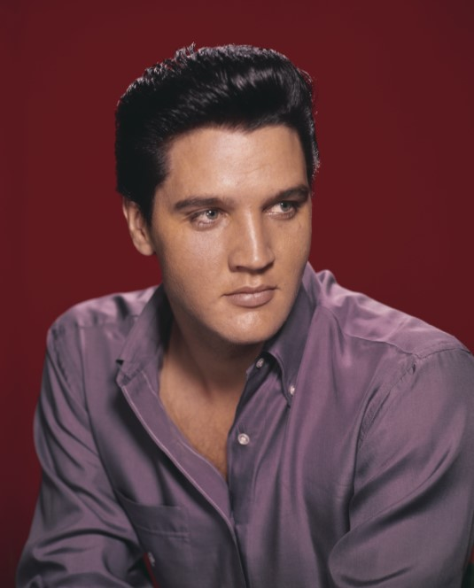
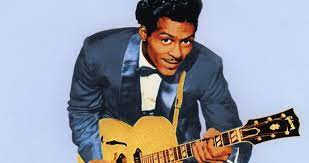

Elvis Presley 
Es un género musical de ritmo marcado, derivado de una mezcla de diversos géneros de música folclórica estadounidense (doo wop, rhythm and blues, hillbilly, blues, country y western son los más destacados) y popularizado desde los años 1950.
Literalmente, el término rock and roll hace referencia a dos tipos de movimiento: por un lado, rock es un movimiento de adelante atrás y de atrás adelante (como el de una mecedora, que en inglés se denomina rocking chair); y por otro lado, roll es un movimiento de balanceo vertical alternado (traducido en términos de aeronavegación como alabeo).
Chuck Berry 
Carl Perkins a partir de 1955 compuso temas dentro del estilo rockabilly como "Blue Suede Shoes", "Matchbox", "Honey Don't" y "Everybody's trying to be my baby" algunos de los cuales alcanzarían los primeros puestos del Billboard y serían versionados a lo largo de los años por diversos artistas como Elvis, The Beatles y posteriormente Stray Cats. Algo similar ocurría con Chuck Berry y composiciones como Johnny B. Good o Sweet Litle Sixteen aunque en este último caso y pese a que nunca fue reconocido como tal, la autoría de varios de sus temas fue disputada por el pianista Johnnie Johnson.